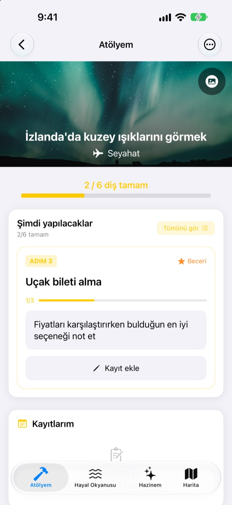
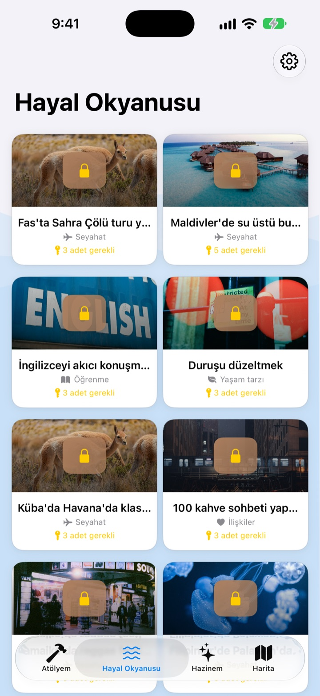
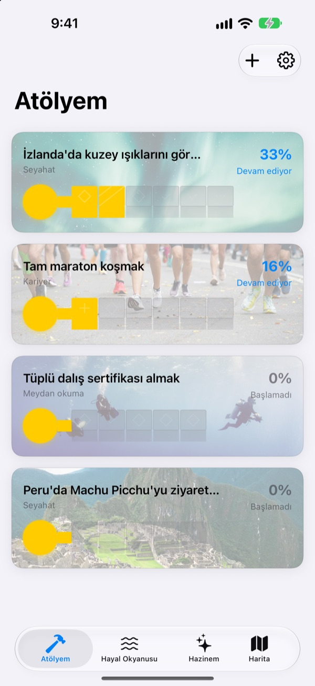
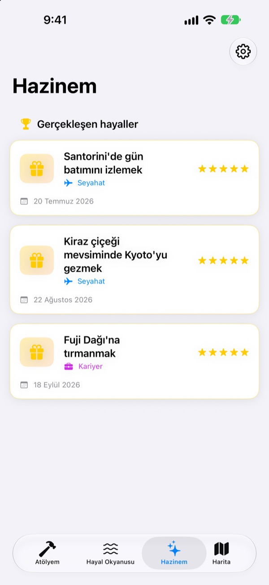

Hayal listeni
yazıp bırakma
Bir hayal seç; seni oraya götüren küçük adımlar bir anahtarın dişleri olsun. Bugünün adımını soru soru yanıtla, bir bakmışsın hayal sandığın açılmış.
Bir kez satın al, tüm özellikleri kullan. Abonelik yok, reklam yok.

Anahtarı tamamla
İzlanda'da kuzey ışıkları hayalinin son iki adımı kaldı. Her soruyu bir satırla yanıtla (boş da bırakabilirsin) ve İleri'ye dokun. Biten her adım bir dişi doldurur, tamamlanan anahtar sandığı açar.
Bir hayal listesi yazıp unuttun mu hiç?
"Kuzey ışıklarını görmek" o kadar büyük ki nereden başlayacağını bilemezsin, o da yıllarca listede kalır. Dream Seeker bu hayali sezonu araştırmak, bütçe biriktirmek, uçak bileti almak gibi bugün yapılabilecek adımlara böler ve sana yalnızca şimdi yapacağın adımı gösterir.
590'dan fazla hayal arasından seç
Seyahat, deneyim, başarı, sağlık, öğrenme ve ilişkiler. Altı alandan hayaller, sandıklar içinde Hayal Okyanusu'nda süzülür. Beğendiğini Atölyem'e al; adımları zaten ayrılmış olur.
Seninki yok mu? Başlık, alan ve gereken adımlarla kendin oluştur.

Her seferinde bir diş, bugüne yetecek kadar
Atölyem'de her hayalin anahtarının ne kadar tamamlandığını bir bakışta görürsün. Şimdi yapılacak adım en üstte durur; hazırlanmış soruları yanıtladıkça bir diş dolar.
Yanıtların ve fotoğrafların Kayıtlarım'da birikir, İlerleme zaman çizelgesinde bütün yolu yeniden görebilirsin.

Gerçekleşen hayaller Hazinem'e, gidilecek yerler haritaya
Bütün dişleri doldur ve sandığı aç. Gerçekleşen hayaller tarihleriyle Hazinem'de birikir; ara verilen hayaller de orada seni bekler, istediğin an yeniden başlarsın.
Bir yere bağlı hayaller haritada toplanır, gitmek istediğin her yeri tek bakışta görürsün.

Üç adımda başla
- 1
Bir hayal seç
Hayal Okyanusu'nda bir sandığa dokun ve Atölyeme al'ı seç.
- 2
Bugünün adımını yanıtla
En üstteki adımın sorularını tek tek yanıtla, bir diş dolsun.
- 3
Sandığı aç
Bütün dişler dolunca anahtar tamamlanır ve hayal sandığı açılır.
Hayal Okyanusu'ndaki altı alan
- Seyahat
- İzlanda'da kuzey ışıklarını görmek · Santorini'de gün batımını izlemek
- Deneyim
- Paraşütle atlamak · Yamaç paraşütü uçmak
- Başarı
- Tam maraton koşmak · Everest Base Camp trekingini yapmak
- Sağlık
- 20 barfiks çekmek · Karın kasları kazanmak
- Öğrenme
- İngilizceyi akıcı konuşmak · Fransızcayı akıcı konuşmak
- İlişkiler
- Ailenle dünya turuna çıkmak · Arkadaşlarla Jeju'da bir ay yaşamak
Her alanda yüze yakın hayal var. Kendi hayalini Atölyem'deki Yeni hayal ekle ile oluştur.
Bir kez al, hepsi senin
Uygulama
- Her adımı için soruları olan 590'dan fazla hayal
- Kendi hayallerin
- Fotoğraflı Kayıtlarım ve İlerleme zaman çizelgesi
- Hazinem ve harita
- Hayal Büyütme Modu
- Gelecek güncellemeler
Geliştiriciye destek ol (isteğe bağlı)
- Uygulama işine yaradıysa Ayarlar'dan küçük bir bahşiş gönderebilirsin
- Bahşiş hiçbir şeyin kilidini açmaz. Göndermesen de tüm özellikler senin
Tek seferlik bahşişler, abonelik değil.
Uygulama içinde ayrıca ücretli bir şey yok. Hesap yok, reklam yok.
Sık sorulan sorular
Nasıl başlarım?
Hayal Okyanusu sekmesinde beğendiğin bir sandığa dokun ve Atölyeme al'ı seç. Atölyem'de şu anki adımın sorularını yanıtladıkça dişler tek tek dolar. Hepsi dolunca sandığı açabilirsin.
Kendi hayalimi ekleyebilir miyim?
Evet. Atölyem'de Yeni hayal ekle'ye dokun; başlığı, alanı ve oraya giden adımları yaz.
Bir hayale nasıl ara verir ya da yeniden başlarım?
Devam eden bir hayalin menüsünde Bu hayalden vazgeç'i seçersen hayal, Hazinem'deki Ara verilen hayaller bölümüne taşınır. Orada Yeniden başla ile Atölyem'e geri alabilir ya da Kalıcı olarak sil ile silebilirsin.
Hayal Büyütme Modu nedir?
Hayallerini dağa tırmanır gibi yönettiğin bir ekran. Ayarlar > Ekran ayarları'ndan açıp kapatabilirsin. Her adım için son tarih koyabilir, maliyet ve zaman gibi engelleri bir proje gibi takip edebilirsin.
Fotoğraflar görünmüyor.
Bazı hayallerin arka plan fotoğrafları internetten indirilir. İnternete bağlı olduğunu kontrol et. Bağlantı yokken varsayılan bir görsel gösterilir.
Kayıtlarımı yeni iPhone'a taşıyabilir miyim?
Kayıtların hesap ya da eşzamanlama olmadan yalnızca bu cihazda saklanır. Yeni iPhone'u iCloud ya da bilgisayar yedeğinden geri yüklediğinde diğer uygulama verileriyle birlikte taşınır.
Uygulama içinde ayrıca satın alınan bir şey var mı?
Yok. Uygulamayı aldığında tüm özellikler senin. Ayarlar'daki bahşiş yalnızca teşekkür etmek istersen diye orada.
Hayallerim ve kayıtlarım bir yere gönderiliyor mu?
Hayır. Hesap yok, reklam ya da analiz aracı kullanılmıyor. Hayallerin, kayıtların ve fotoğrafların bu cihazda kalır.
Size nasıl ulaşırım?
Hata bildirimi, özellik önerisi ya da başka her şey için uygulamanın Ayarlar bölümündeki Geri bildirim gönder'i veya Instagram DM'i (@lee25_ios) kullanabilirsin.
Merak ettiğin ya da takıldığın bir şey mi var? leeo@kakao.com adresine yaz.